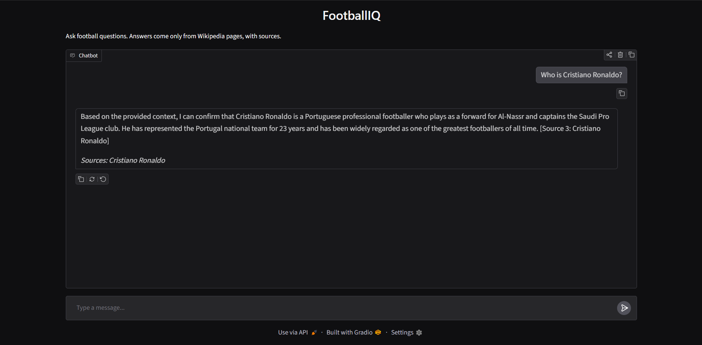

FootballIQ
Ask a football question and get an answer taken from Wikipedia, with the source named. If the pages don’t cover it, it says so.

How it works
This is a retrieval-augmented generation (RAG) system. The language model only sees the passages the search finds, so its answers stay tied to the source text.
- Collect 16 Wikipedia pages on players, clubs, tournaments and rules, split into 854 overlapping chunks.
- Index each chunk as a vector (
all-mpnet-base-v2) in ChromaDB, plus a keyword index (BM25). - Search with both and merge the two rankings, so meaning and exact phrases both count.
- Answer with Gemini, told to use only the retrieved text and cite it. If Gemini is busy it retries, tries a second model, then a local one.
Built with Python, sentence-transformers, ChromaDB, rank-bm25, FastAPI, Gradio and the Gemini API.
How I measured it
I wrote my own test questions and changed one thing at a time. Page hit means the right Wikipedia page was in the top 4 results. Answer hit means a keyword from the answer appeared in those 4 chunks. MRR rewards the right page appearing higher.
| Experiment | Page hit | Answer hit | Easy set MRR |
|---|---|---|---|
| Baseline: small embedding model, top 4 | 95% | 95% | 0.98 |
| A: top 8 results | 95% | 95% | not run |
| B: page title added to each chunk | 100% | 90% | 0.98 |
| C: B plus a larger embedding model | 100% | 95% | 0.94 |
| D: C plus keyword search (hybrid) | 95% | 100% | 0.98 |
Rows A to D use the 20-question hard set; MRR is from the 22-question easy set.
The larger test set
| Question type | Questions | Page hit |
|---|---|---|
| Direct (names the person or club) | 10 | 10 / 10 |
| Paraphrase (describes without naming) | 8 | 8 / 8 |
| Multi-fact (needs two ideas at once) | 6 | 5 / 6 |
Across all three sets (66 questions), the right page was in the top 4 for 64.
What I learned
- Retrieving more results (A) changed nothing. The misses were ranking problems, not a cutoff problem.
- Embeddings missed an exact phrase (“held every four years”). Adding keyword search fixed it.
- The index and the search must use the same embedding model, or the dimensions don’t match and the search fails.
- A prompt that said “use only the context” still let the model answer “capital of Japan” from a passing mention of Tokyo, so I tightened the wording and kept testing.
- With 20 to 66 questions, one question moves a score by several points. I treat these numbers as signals, not proof.
Limits you should know about
- This is a demo of a locally run app. It isn’t hosted, because the hosts I checked charge for apps that run Python. The code and setup steps are on GitHub.
- The faithfulness test is preliminary. It has 14 questions, and some answers came from a local fallback model instead of Gemini because of rate limits. A Gemini-only rerun is still to do.
- Small, friendly test sets. Keyword checks can pass by accident, so page hit is the more reliable number.
- Known miss: “Which player won the Ballon d’Or and the 2022 World Cup?” fails, because the question never names Messi and plain search can’t infer him.
- Narrow data: 16 Wikipedia pages only.